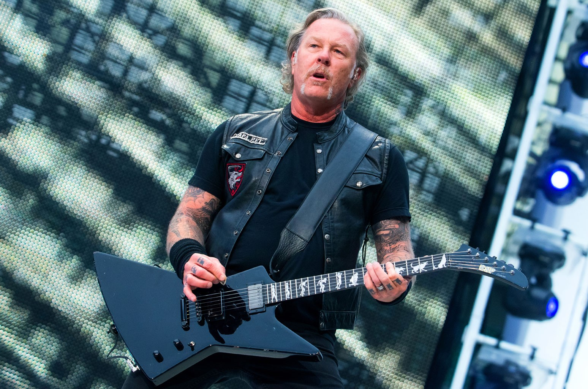

James Hetfield is a renowned guitarist, vocalist, and co-founder of the legendary heavy metal band
Metallica. Born on August 3, 1963, in Downey, California, Hetfield played a pivotal role in shaping
the sound and style of Metallica, which went on to become one of the most influential and successful
metal bands in history.
Hetfield's distinctive rhythm guitar playing and powerful vocal delivery have been instrumental in
defining Metallica's signature sound. His aggressive yet melodic guitar riffs, coupled with his raw
and emotive vocals, have resonated with fans worldwide and earned him a place among the greatest metal
musicians of all time.
As a songwriter, James Hetfield has contributed extensively to Metallica's iconic catalog of songs,
crafting lyrics that delve into themes of introspection, societal issues, and personal struggles. His
songwriting prowess is evident in tracks like "Master of Puppets," "Enter Sandman," and "Nothing Else
Matters," which have become anthems for generations of metal enthusiasts.
Beyond his musical contributions, Hetfield's presence as a frontman and performer has been instrumental
in Metallica's live performances, known for their high energy and electrifying stage presence. His
commanding presence on stage, coupled with his dynamic guitar playing, has made Metallica's concerts
unforgettable experiences for fans worldwide.
Throughout his career, James Hetfield has also been open about his personal struggles with addiction and
mental health, using his platform to advocate for recovery and self-care. His journey to sobriety and
resilience in the face of challenges have inspired many, adding depth and authenticity to his artistry.
In essence, James Hetfield's impact on the world of metal music is immeasurable. His contributions to
Metallica's legacy, both as a musician and a songwriter, continue to resonate with audiences, solidifying
his status as a true icon of heavy metal.